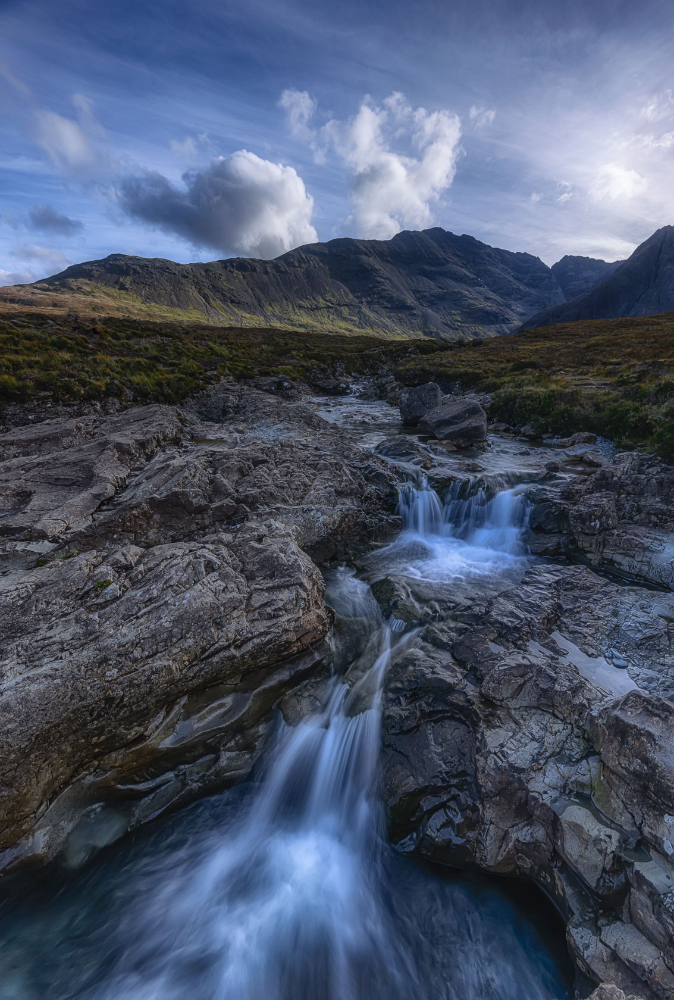
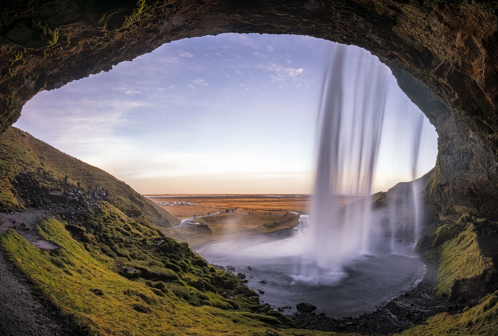

如何拍摄丝绸般平滑的瀑布
引言：瀑布长曝光的魅力
瀑布是最适合使用长曝光技术的自然主题之一。通过延长曝光时间，湍急的流水会被转化为丝绸般平滑的线条，创造出梦幻而宁静的效果，与周围岩石的锐利对比形成强烈的视觉冲击。
这种摄影技术不仅能展现瀑布的动态美，还能表达出水的流动性和能量，同时保持周围环境的清晰细节。完美的瀑布长曝光照片往往给人一种超现实的感觉，仿佛进入了一个魔幻世界。
所需设备
要拍摄高质量的瀑布长曝光照片，以下是基本的设备需求：
- 相机：任何可以手动控制光圈、快门速度和ISO的相机，包括单反相机、无反相机
- 三脚架：稳定的三脚架是必不可少的，因为长曝光需要相机完全静止
- ND滤镜：中等强度的ND滤镜，如ND8(3档)、ND64(6档)或ND1000(10档)，取决于环境光线和目标曝光时间
- 镜头布：用于擦拭镜头和滤镜上的水滴
- 防水设备：如果在瀑布附近拍摄，相机可能会被水花溅湿，准备防水罩或雨伞很有必要
实用提示
选择带有防水或防滴溅设计的相机和镜头对瀑布摄影很有帮助。如果您的设备不防水，考虑购买一个简单的相机雨衣或使用透明塑料袋进行保护。
拍摄计划与准备
成功的瀑布摄影始于良好的计划：
- 时机选择：阴天或傍晚时分是拍摄瀑布的理想时间，可以避免强烈的光影对比。雨后的瀑布水流通常更丰沛。
- 研究地点：提前了解瀑布的方位、最佳观景点和访问路径。许多著名瀑布的最佳拍摄位置可能需要一些徒步才能到达。
- 考虑季节因素：不同季节的瀑布呈现不同特色，春季水量充沛，秋季可能有周围的红叶点缀。
- 检查天气：避免在大风天气拍摄，风会引起相机震动影响画质。
相机设置与参数
以下是拍摄瀑布长曝光时推荐的相机设置：
| 参数 | 推荐设置 | 说明 |
|---|---|---|
| 拍摄模式 | 光圈优先(A/Av)或手动(M) | 光圈优先模式让您控制景深，同时相机自动调整其他参数；手动模式则提供完全控制。 |
| 光圈 | f/8 - f/13 | 这个范围通常提供最佳的景深和锐利度，确保前景到背景都清晰。 |
| ISO | 100 或最低原生值 64 | 使用最低ISO减少噪点，提高图像质量，并延长曝光时间。 |
| 白平衡 | 自动或阴天 | 阴天预设通常为瀑布照片提供更暖的色调，但如果拍摄RAW格式，可以在后期调整。 |
| 曝光时间 | 0.5秒 - 2秒（小瀑布） 2秒 - 30秒（大瀑布） |
曝光时间取决于水流速度和您想要的效果。OWL ND CALC可以根据滤镜强度计算精确曝光值。 |
| 对焦模式 | 手动对焦 | 使用实时取景放大或对焦峰值辅助，对前景岩石等静态元素进行精确对焦。 |
使用OWL ND CALC应用程序，您可以通过两种强大的计算模式精确控制您的长曝光拍摄：
基础计算模式
- 测量不使用滤镜时的正确曝光（如1/60秒，f/11，ISO 100）
- 在猫头鹰计算器中输入这些基本参数
- 选择您计划使用的ND滤镜强度（如ND64，6档）
- 应用会自动计算新的曝光时间（在这个例子中约为1秒）
詹姆斯高级计算模式（逆向计算）
- 确定您想要的目标曝光时间（例如，8秒的丝绸效果）
- 输入您当前的相机参数（光圈、ISO、基础快门速度）
- 选择"逆向计算"功能
- 应用会智能推荐最适合的ND滤镜组合（如"使用ND1000或ND64+ND8组合可获得8.2秒曝光"）
- 如果您没有完全匹配的滤镜，应用还会提供最接近的替代方案
专业提示
詹姆斯逆向计算模式特别适合有特定创意视觉效果的摄影师。例如，您知道实现丝绸般瀑布效果需要2秒曝光，或制作星轨需要20分钟曝光，只需输入目标时间，让应用为您提供精确的滤镜组合建议。
实战拍摄技巧
掌握以下技巧可以大大提高您的瀑布长曝光照片质量：
构图考虑
- 寻找前景兴趣点：如特色岩石、树根或植物，为照片增添深度
- 包含环境元素：不要只关注瀑布本身，周围的景观可以增强照片的叙事性
- 利用引导线：河流或小溪可以作为引导线引导观者的视线
- 避免过度曝光的天空：如果包含天空，使用渐变镜平衡曝光
实用拍摄步骤
- 稳定三脚架：将三脚架放置在坚固的地面上
- 取景和构图：在安装ND滤镜前完成取景和构图，因为某些ND滤镜会使取景器或屏幕变得很暗
- 对焦后锁定：在安装滤镜前完成对焦，然后切换到手动对焦模式防止相机在拍摄时重新对焦
- 安装滤镜：小心地安装ND滤镜，避免在镜头或滤镜上留下指纹
- 计算曝光：使用猫头鹰 OWL ND CALC计算正确的曝光时间
- 使用遥控器或定时器：触发快门时使用遥控器或2秒延时，避免相机震动
- 检查直方图：拍摄后检查直方图，确保没有过度曝光或欠曝的区域
- 多次尝试：尝试不同的曝光时间，获得最佳的水流效果
避免镜头起雾
在湿润的瀑布环境中，镜头或滤镜可能会起雾。尝试这些方法：将设备预先适应环境温度、使用防雾喷剂、随身携带除湿剂或使用便携式吹风机（如有条件）。
后期处理技巧
即使是完美拍摄的瀑布照片也能从一些后期处理中获益：
基本调整
- 调整白平衡：瀑布照片往往受周围环境（如树叶）的色彩反射影响，可能需要调整
- 增强对比度：适当增加对比度可以强调水流和岩石之间的差异
- 提高阴影细节：轻微提升阴影可以显示出水下或岩石阴影中的细节
- 调整曝光：确保水流区域不会过度曝光而失去细节
选择性调整
- 选择性锐化：对岩石等静态元素进行锐化，而对流水区域保持柔和
- 局部对比度：使用局部对比度工具（如清晰度或结构）强调水流纹理
- 色彩调整：选择性增强苔藓、树叶等元素的色彩，增加照片活力
- 降噪：针对长曝光可能产生的噪点进行局部降噪处理
示例作品解析
让我们分析两个不同风格的瀑布长曝光照片，了解它们的技术参数和视觉特点：
示例1：梦幻柔和瀑布
技术参数：
- 相机：Nikon Z7
- 镜头：Z 14-30mm f/4 s
- 光圈：f/8
- 曝光时间：0.6秒
- ISO：100
- 滤镜：ND64（6档）
风格分析：苏格兰高地的仙女池照片采用了0.6秒曝光时间，使瀑布水流呈现出完全平滑的纱幔效果。色调偏冷，营造出宁静、梦幻的氛围。构图上使用了前景岩石作为锚点，引导视线向瀑布方向。
示例2：框式水帘洞风格
技术参数：
- 相机：Nikon Z9
- 镜头：Z 14-24mm f/2.8 S
- 光圈：f/11
- 曝光时间：0.8秒
- 64
- 滤镜：ND64（6档）
风格分析：这张照片使用了较短的曝光时间，保留了水流中的一些动态纹理和细节，同时仍然呈现出流动感。色调较暖，强调了日落时分的金色光线。14mm超广角构图包含了更多环境元素，创造出更广阔的场景感。
总结
拍摄丝绸般平滑的瀑布是一项需要耐心和技巧的挑战，但掌握了正确的技术后，您将能够创作出令人惊叹的照片。关键点回顾：
- 准备适当的设备，特别是稳定的三脚架和合适强度的ND滤镜
- 选择有利的光线条件，如阴天或黄金时段
- 使用低ISO和中等光圈（f/8-f/13）获得最佳图像质量
- 根据水流速度和期望效果选择合适的曝光时间
- OWL ND CALC应用可以帮助您准确计算使用ND滤镜时的曝光时间
- 后期处理时平衡水流的平滑效果与岩石等细节的清晰度
开始尝试这些技巧，并记住，每个瀑布都有其独特的特性，可能需要不同的方法。通过实践和尝试，您将找到最能表达每个瀑布独特美感的方式。